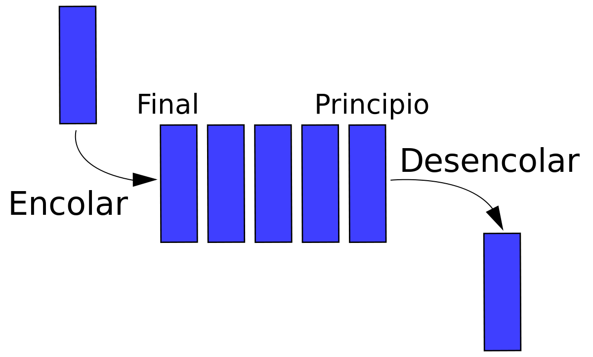

<!DOCTYPE html>
<html lang="en">
  <head>
    <meta charset="utf-8" />
    <meta name="viewport" content="width=device-width, initial-scale=1.0, maximum-scale=1.0, user-scalable=no" />

    <title>reveal-md</title>
    <link rel="stylesheet" href="./css/reveal.css" />
    <link rel="stylesheet" href="./css/theme/black.css" id="theme" />
    <link rel="stylesheet" href="./css/highlight/zenburn.css" />
    <link rel="stylesheet" href="./css/print/paper.css" type="text/css" media="print" />
    <link rel="stylesheet" href="./_assets/slides/css/filminas.css" />

  </head>
  <body>
    <div class="reveal">
      <div class="slides"><section  data-markdown><script type="text/template"><!doctype html>
<html lang="es">
<head>

    <link href='images/code.ico' rel='shortcut icon' type='image/x-icon'>
    <meta charset="utf-8">

    <title>Colas</title>
    <meta name="description" content="Colas">
    <meta name="author" content="
    Ricardo Martin Marcucci
">

    <meta name="apple-mobile-web-app-capable" content="yes">
    <meta name="apple-mobile-web-app-status-bar-style" content="black-translucent">
    <meta name="viewport" content="width=device-width, initial-scale=1.0, maximum-scale=1.0, user-scalable=no">
    <link rel="stylesheet" href="https://use.fontawesome.com/releases/v5.2.0/css/all.css" integrity="sha384-hWVjflwFxL6sNzntih27bfxkr27PmbbK/iSvJ+a4+0owXq79v+lsFkW54bOGbiDQ" crossorigin="anonymous">
    <link rel="stylesheet" href="css/reveal.css">
    <link rel="stylesheet" href="css/theme/league.css" id="theme">

    <link rel="icon" href="https://www.iua.edu.ar/wp-content/uploads/sites/6/2016/12/favicon.png" sizes="32x32" />
    <link rel="icon" href="https://www.iua.edu.ar/wp-content/uploads/sites/6/2016/12/favicon.png" sizes="192x192" />
    <link rel="apple-touch-icon-precomposed" href="https://www.iua.edu.ar/wp-content/uploads/sites/6/2016/12/favicon.png" />

    <!-- Theme used for syntax highlighting of code -->
    <link rel="stylesheet" href="lib/css/zenburn.css">
    <link rel="stylesheet" href="css/filminas.css">
    <script src="js/JSCPP.es5.min.js">__SCRIPT_END__
    <script src="js/runcpp.js">__SCRIPT_END__

    <!-- Printing and PDF exports -->
    <script>
        var link = document.createElement( 'link' );
        link.rel = 'stylesheet';
        link.type = 'text/css';
        link.href = window.location.search.match( /print-pdf/gi ) ? 'css/print/pdf.css' : 'css/print/paper.css';
        document.getElementsByTagName( 'head' )[0].appendChild( link );
    __SCRIPT_END__

    <!--[if lt IE 9]>
    <script src="lib/js/html5shiv.js">__SCRIPT_END__
    <![endif]-->
</head>

<body>

<div class="reveal">

    <!-- Any section element inside of this container is displayed as a slide -->
    <div class="slides">


<section>
    <h1>Colas</h1>
    

    <p>
        <small>Created by
            <a href="https://t.me/rmarku" target="_blank">
                <i class="fab fa-telegram-plane"></i>rmarku
            </a>
        </small>
    </p>
</section>


<section>
    <h2>Colas</h2>
    <p>Una cola es una colección ordenada de elementos en la que pueden insertarse elementos en un extremo (FONDO)
        y suprimirse elementos por el otro extremo (FRENTE)
    </p>
    
</section>
<section>
    <h2>Colas</h2>

    Las colas son estructuras que se encuentran frecuentemente en la vida diaria. Algunos ejemplos se encuentran en la
    fila de un banco, un grupo de automóviles esperando en una cab ina de peaje, personas esperando para comprar un
    boleto pa ra el cine, etc.
    
</section>
<section>
    <h2>Colas</h2>

    Por ejemplo, la forma en que se acomodan los coches que llegan a una cabina de peaje es la siguiente:
    se puede añadir un coche al final de la cola, y el primero que se va es el que está al principio de la cola . O sea
    que el primero que llego es el primero que se va.
</section>
<section>
    <h2>Colas</h2>
    <br>
    La propiedad anterior se conoce como <b>FIFO</b> ( First In First Out ), es decir, el primero en entrar será el
    primero en salir.
    
</section>
<section>
    <h2>Colas</h2>
    <table>
        <tr>
            <td><b>encolar(x)</b></td>
            <td>Inserta el elemento por el Fondo de la cola.</td>
        </tr>
        <tr>
            <td><b>x=desencolar()</b></td>
            <td>Saca un elemento por el frente de la cola y lo almacena en x</td>
        </tr>
        <tr>
            <td><b>estaVacia()</b></td>
            <td>Devuelve V/F según si está vacía la cola.</td>
        </tr>
    </table>
</section>
<section>
    <h2>Colas</h2>
    <h4>Formas de implementar</h4>
    <ul>
        <li>Mediante arreglos: <br> Se mantiene un indice de entrada y uno de la salida.</li>
        <li>Mediante Nodos enlazados:<br>Se mantiene un puntero al primer nodo y uno al ultimo nodo.</li>
    </ul>
</section>
<section>
    <h2>Colas</h2>
    <h2>A implementar.</h2>
</section>
</div>
</div>

<script src="lib/js/head.min.js">__SCRIPT_END__
<script src="js/reveal.js">__SCRIPT_END__

<script>
    // More info https://github.com/hakimel/reveal.js#configuration
    Reveal.initialize({
        history: true,

        // More info https://github.com/hakimel/reveal.js#dependencies
        dependencies: [
            {src: 'plugin/markdown/marked.js'},
            {src: 'plugin/markdown/markdown.js'},
            {src: 'plugin/notes/notes.js', async: true},
            {src: 'plugin/math/math.js', async: true},
            {
                src: 'plugin/highlight/highlight.js', async: true, callback: function () {
                    hljs.initHighlightingOnLoad();
                }
            }
        ]
    });
__SCRIPT_END__
</body>
</html>

</script></section></div>
    </div>

    <script src="./js/reveal.js"></script>

    <script>
      function extend() {
        var target = {};
        for (var i = 0; i < arguments.length; i++) {
          var source = arguments[i];
          for (var key in source) {
            if (source.hasOwnProperty(key)) {
              target[key] = source[key];
            }
          }
        }
        return target;
      }

      // Optional libraries used to extend on reveal.js
      var deps = [
        { src: './plugin/markdown/marked.js', condition: function() { return !!document.querySelector('[data-markdown]'); } },
        { src: './plugin/markdown/markdown.js', condition: function() { return !!document.querySelector('[data-markdown]'); } },
        { src: './plugin/highlight/highlight.js', async: true, callback: function() { hljs.initHighlightingOnLoad(); } },
        { src: './plugin/zoom-js/zoom.js', async: true },
        { src: './plugin/notes/notes.js', async: true },
        { src: './plugin/math/math.js', async: true }
      ];

      // default options to init reveal.js
      var defaultOptions = {
        controls: true,
        progress: true,
        history: true,
        center: true,
        transition: 'default', // none/fade/slide/convex/concave/zoom
        dependencies: deps
      };

      // options from URL query string
      var queryOptions = Reveal.getQueryHash() || {};

      var options = extend(defaultOptions, {"controls":true,"progress":true,"slideNumber":true}, queryOptions);
    </script>

    <script src="./_assets/slides/js/pruebas.js"></script>
    <script src="./_assets/slides/js/init.js"></script>

    <script>
      Reveal.initialize(options);
    </script>
  </body>
</html>
